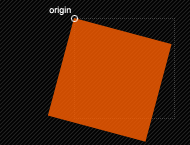
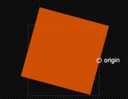

CSS3属性中有关于制作动画的三个属性：Transform,Transition,Animation；
Transform
在CSS3中transform主要包括以下几种：旋转rotate、扭曲skew、缩放scale和移动translate以及矩阵变形matrix。
旋转rotate
rotate(<angle>) ：通过指定的角度参数对原元素指定一个2D rotation（2D 旋转），需先有transform-origin属性的定义。transform-origin定义的是旋转的基点，其中angle是指旋转角度，如果设置的值为正数表示顺时针旋转，如果设置的值为负数，则表示逆时针旋转。如：transform:rotate(30deg):
移动translate
移动translate我们分为三种情况：translate(x,y)水平方向和垂直方向同时移动（也就是X轴和Y轴同时移动）；translateX(x)仅水平方向移动（X轴移动）；translateY(Y)仅垂直方向移动（Y轴移动）
缩放scale
缩放scale和移动translate是极其相似，他也具有三种情况：scale(x,y)使元素水平方向和垂直方向同时缩放（也就是X轴和Y轴同时缩放）；scaleX(x)元素仅水平方向缩放（X轴缩放）；scaleY(y)元素仅垂直方向缩放（Y轴缩放），但它们具有相同的缩放中心点和基数，其中心点就是元素的中心位置，缩放基数为1，如果其值大于1元素就放大，反之其值小于1，元素缩小
扭曲skew
扭曲skew和translate、scale一样同样具有三种情况：skew(x,y)使元素在水平和垂直方向同时扭曲（X轴和Y轴同时按一定的角度值进行扭曲变形）；skewX(x)仅使元素在水平方向扭曲变形（X轴扭曲变形）；skewY(y)仅使元素在垂直方向扭曲变形（Y轴扭曲变形）
1.skew(<angle> [, <angle>]) ：X轴Y轴上的skew transformation（斜切变换）。第一个参数对应X轴，第二个参数对应Y轴。如果第二个参数未提供，则值为0，也就是Y轴方向上无斜切。skew是用来对元素进行扭曲变行，第一个参数是水平方向扭曲角度，第二个参数是垂直方向扭曲角度。其中第二个参数是可选参数，如果没有设置第二个参数，那么Y轴为0deg。同样是以元素中心为基点，我们也可以通过transform-origin来改变元素的基点位置。如：transform:skew(30deg,10deg):

skewX(<angle> ： 按给定的角度沿X轴指定一个skew transformation（斜切变换）。skewX是使元素以其中心为基点，并在水平方向（X轴）进行扭曲变行，同样可以通过transform-origin来改变元素的基点。如：transform:skewX(30deg)

skewY(<angle>) ： 按给定的角度沿Y轴指定一个skew transformation（斜切变换）。skewY是用来设置元素以其中心为基点并按给定的角度在垂直方向（Y轴）扭曲变形。同样我们可以通过transform-origin来改变元素的基点。如：transform:skewY（10deg）

矩阵matrix
matrix(<number>, <number>, <number>, <number>, <number>, <number>) ： 以一个含六值的(a,b,c,d,e,f)变换矩阵的形式指定一个2D变换，相当于直接应用一个[a b c d e f]变换矩阵。就是基于水平方向（X轴）和垂直方向（Y轴）重新定位元素,此属性值使用涉及到数学中的矩阵
改变元素基点transform-origin
前面我们多次提到transform-origin这个东东，他的主要作用就是让我们在进行transform动作之前可以改变元素的基点位置，因为我们元素默认基点就是其中心位置，换句话说我们没有使用transform-origin改变元素基点位置的情况下，transform进行的rotate,translate,scale,skew,matrix等操作都是以元素自己中心位置进行变化的。但有时候我们需要在不同的位置对元素进行这些操作，那么我们就可以使用transform-origin来对元素进行基点位置改变，使元素基点不在是中心位置，以达到你需要的基点位置
transform-origin(X,Y):用来设置元素的运动的基点（参照点）。默认点是元素的中心点。其中X和Y的值可以是百分值,em,px，其中X也可以是字符参数值left,center,right；Y和X一样除了百分值外还可以设置字符值top,center,bottom，这个看上去有点像我们background-position设置一样
其中 left,center right是水平方向取值，对应的百分值为left=0%;center=50%;right=100%而top center bottom是垂直方向的取值，其中top=0%;center=50%;bottom=100%;如果只取一个值，表示垂直方向值不变
transform-origin:(left,top):
(2)transform-origin:right
(3)transform-origin(25%,75%)
transform-origin并不是transform中的属性值，他具有自己的语法，前面我也说过了，说简单一点就是类似于我们的background-position的用法，但又有其不一样，因为我们background-position不需要区别浏览器内核不同的写法，但transform-origin跟其他的css3属性一样，我们需要在不同的浏览内核中加上相应的前缀
//Mozilla内核浏览器：firefox3.5+
-moz-transform-origin: x y;
//Webkit内核浏览器：Safari and Chrome
-webkit-transform-origin: x y;
//Opera
-o-transform-origin: x y ;
//IE9
-ms-transform-origin: x y;
//W3C标准
transform-origin: x y ;
//transform也是
//Mozilla内核浏览器：firefox3.5+
-moz-transform: rotate | scale | skew | translate ;
//Webkit内核浏览器：Safari and Chrome
-webkit-transform: rotate | scale | skew | translate ;
//Opera
-o-transform: rotate | scale | skew | translate ;
//IE9
-ms-transform: rotate | scale | skew | translate ;
//W3C标准
transform: rotate | scale | skew | translate ;
注意的是使用多个属性值时，其之间不能用逗号（“，”）分隔，必须使用空格分隔，记住了是空格分隔
.demo a:hover {
-moz-transform: rotate(45deg) scale(0.8,1.2) skew(60deg,-30deg);
-webkit-transform: rotate(45deg) scale(0.8,1.2) skew(60deg,-30deg);
-o-transform: rotate(45deg) scale(0.8,1.2) skew(60deg,-30deg);
-ms-transform: rotate(45deg) scale(0.8,1.2) skew(60deg,-30deg);
transform: rotate(45deg) scale(0.8,1.2) skew(60deg,-30deg);
}
Transition
W3C标准中对css3的transition这是样描述的：“css的transition允许css的属性值在一定的时间区间内平滑地过渡。这种效果可以在鼠标单击、获得焦点、被点击或对元素任何改变中触发，并圆滑地以动画效果改变CSS的属性值。”
transition主要包含四个属性值：
执行变换的属性：transition-property
变换延续的时间：transition-duration
在延续时间段，变换的速率变化transition-timing-function
变换延迟时间transition-delay。
下面分别来看这四个属性值
transition-property
transition-property ： none | all | [ <IDENT> ] [ ',' <IDENT> ]*
transition-property是用来指定当元素其中一个属性改变时执行transition效果，其主要有以下几个值：none(没有属性改变)；all（所有属性改变）这个也是其默认值；indent（元素属性名）。当其值为none时，transition马上停止执行，当指定为all时，则元素产生任何属性值变化时都将执行transition效果，ident是可以指定元素的某一个属性值。并不是什么属性改变都为触发transition动作效果，比如页面的自适应宽度，当浏览器改变宽度时，并不会触发transition的效果,具体以下css属性可以实现transition效果
PropertyName Type
background-color as color
background-position as repeatable list of simple list of length, percentage, or calc
border-bottom-color as color
border-bottom-width as length
border-left-color as color
border-left-width as length
border-right-color as color
border-right-width as length
border-spacing as simple list of length
border-top-color as color
border-top-width as length
bottom as length, percentage, or calc
clip as rectangle
color as color
font-size as length
font-weight as font weight
height as length, percentage, or calc
left as length, percentage, or calc
letter-spacing as length
line-height as either number or length
margin-bottom as length
margin-left as length
margin-right as length
margin-top as length
max-height as length, percentage, or calc
max-width as length, percentage, or calc
min-height as length, percentage, or calc
min-width as length, percentage, or calc
opacity as number
outline-color as color
outline-width as length
padding-bottom as length
padding-left as length
padding-right as length
padding-top as length
right as length, percentage, or calc
text-indent as length, percentage, or calc
text-shadow as shadow list
top as length, percentage, or calc
vertical-align as length
visibility as visibility
width as length, percentage, or calc
word-spacing as length
z-index as integer
transition-duration
transition-duration是用来指定元素 转换过程的持续时间，取值：<time>为数值，单位为s（秒）或者ms(毫秒),可以作用于所有元素，包括:before和:after伪元素。其默认值是0，也就是变换时是即时的。
transition-timing-function
transition-timing-function ： ease | linear | ease-in | ease-out | ease-in-out | cubic-bezier
1、ease：（逐渐变慢）默认值，ease函数等同于贝塞尔曲线(0.25, 0.1, 0.25, 1.0).
2、linear：（匀速），linear 函数等同于贝塞尔曲线(0.0, 0.0, 1.0, 1.0).
3、ease-in：(加速)，ease-in 函数等同于贝塞尔曲线(0.42, 0, 1.0, 1.0).
4、ease-out：（减速），ease-out 函数等同于贝塞尔曲线(0, 0, 0.58, 1.0).
5、ease-in-out：（加速然后减速），ease-in-out 函数等同于贝塞尔曲线(0.42, 0, 0.58, 1.0).
6、cubic-bezier：（该值允许你去自定义一个时间曲线）,(x1, y1, x2, y2)四个值特定于曲线上点P1和点P2。所有值需在[0, 1]区域内，否则无效
transition-delay
transition-delay是用来指定一个动画开始执行的时间，也就是说当改变元素属性值后多长时间开始执行transition效果，其取值：
a {
-moz-transition: background 0.5s ease-in,color 0.3s ease-out;
-webkit-transition: background 0.5s ease-in,color 0.3s ease-out;
-o-transition: background 0.5s ease-in,color 0.3s ease-out;
transition: background 0.5s ease-in,color 0.3s ease-out;
}
如果你想给元素执行所有transition效果的属性，那么我们还可以利用all属性值来操作，此时他们共享同样的延续时间以及速率变换方式
a {
-moz-transition: all 0.5s ease-in;
-webkit-transition: all 0.5s ease-in;
-o-transition: all 0.5s ease-in;
transition: all 0.5s ease-in;
}
因为transition最早是有由webkit内核浏览器提出来的，mozilla和opera都是最近版本才支持这个属性，而我们的大众型浏览器IE全家都是不支持，另外由于各大现代浏览器Firefox,Safari,Chrome,Opera都还不支持W3C的标准写法，所以在应用transition时我们有必要加上各自的前缀
Animation
CSS3中的Animation与HTML5中的Canvas绘制动画又不同，Animation只应用在页面上已存在的DOM元素上，而且他跟Flash和JavaScript以及jQuery制作出来的动画效果又不一样，因为我们使用CSS3的Animation制作动画我们可以省去复杂的js,jquery代码.只是有一点不足之处，我们运用Animation能创建自己想要的一些动画效果，但是有点粗糙
开始介绍Animation之前我们有必要先来了解一个特殊的东西，那就是"Keyframes",我们把他叫做“关键帧”
Keyframes具有其自己的语法规则，他的命名是由"@keyframes"开头，后面紧接着是这个“动画的名称”加上一对花括号“{}”，括号中就是一些不同时间段样式规则，有点像我们css的样式写法一样。对于一个"@keyframes"中的样式规则是由多个百分比构成的，如“0%”到"100%"之间，我们可以在这个规则中创建多个百分比，我们分别给每一个百分比中给需要有动画效果的元素加上不同的属性，从而让元素达到一种在不断变化的效果，比如说移动，改变元素颜色，位置，大小，形状等，不过有一点需要注意的是，我们可以使用“from” “to”来代表一个动画是从哪开始，到哪结束，也就是说这个 "from"就相当于"0%"而"to"相当于"100%",值得一说的是，其中"0%"不能像别的属性取值一样把百分比符号省略，我们在这里必须加上百分符号（“%”）如果没有加上的话，我们这个keyframes是无效的，不起任何作用。因为keyframes的单位只接受百分比值。
@keyframes IDENT {
from {
Properties:Properties value;
}
Percentage {
Properties:Properties value;
}
to {
Properties:Properties value;
}
}
@keyframes IDENT {
0% {
Properties:Properties value;
}
Percentage {
Properties:Properties value;
}
100% {
Properties:Properties value;
}
}
@-webkit-keyframes 'wobble' {
0% {
margin-left: 100px;
background: green;
}
40% {
margin-left: 150px;
background: orange;
}
60% {
margin-left: 75px;
background: blue;
}
100% {
margin-left: 100px;
background: red;
}
}
Keyframes定义好了以后，我们需要怎么去调用刚才定义好的动画“wobble”
CSS3的animation类似于transition属性，他们都是随着时间改变元素的属性值。他们主要区别是transition需要触发一个事件(hover事件或click事件等)才会随时间改变其css属性；而animation在不需要触发任何事件的情况下也可以显式的随着时间变化来改变元素css的属性值，从而达到一种动画的效果。这样我们就可以直接在一个元素中调用animation的动画属性,基于这一点，css3的animation就需要明确的动画属性值，这也就是回到我们上面所说的，我们需要keyframes来定义不同时间的css属性值,达到元素在不同时间段变化的效果。
.demo1 {
-webkit-animation-name:'wobble';
/*动画属性名，也就是我们前面keyframes定义的动画名,none为默认值，当值为none时，将没有任何动画效果.可以同时附几个animation给一个元素，我们只需要用逗号“，”隔开 */
-webkit-animation-duration: 10s;
/*动画持续时间,单位为s （秒.）其默认值为“0”。这个属性跟transition中的transition-duration使用方法是一样的。*/
-webkit-animation-timing-function: ease-in-out;
/*动画频率，和transition-timing-function是一样的,具有六种变换方式：ease;ease-in;ease-in-out;linear;cubic-bezier*/
-webkit-animation-delay: 2s;
/*动画延迟时间.单位为s(秒)，其默认值也是0。这个属性和transition-delay使用方法是一样的。*/
-webkit-animation-iteration-count: 10;
/*定义循环次数，其默认值为“1”，infinite为无限次*/
-webkit-animation-direction: alternate;
/*animation-direction是用来指定元素动画播放的方向，其只有两个值，默认值为normal，如果设置为normal时，动画的每次循环都是向前播放；另一个值是alternate，他的作用是，动画播放在第偶数次向前播放，第奇数次向反方向播放。*/
}
animation-play-state主要是用来控制元素动画的播放状态。其主要有两个值，running和paused其中running为默认值。他们的作用就类似于我们的音乐播放器一样，可以通过paused将正在播放的动画停下了，也可以通过running将暂停的动画重新播放，我们这里的重新播放不一定是从元素动画的开始播放，而是从你暂停的那个位置开始播放。另外如果暂时了动画的播放，元素的样式将回到最原始设置状态。这个属性目前很少内核支持，所以只是稍微提一下